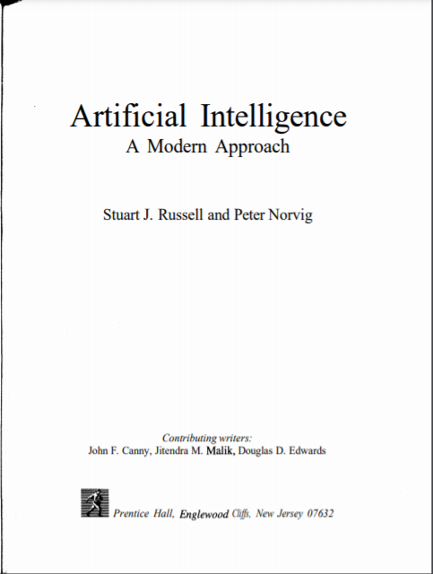
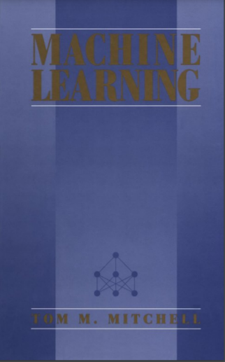

Artificial Intelligence - A Modern Approach
BY: Stuart J Russell, Peter Norvig
Published By: Prentice Hall

BY: Stuart J Russell, Peter Norvig
Published By: Prentice Hall
© | College-RescueSource | 2021-2022